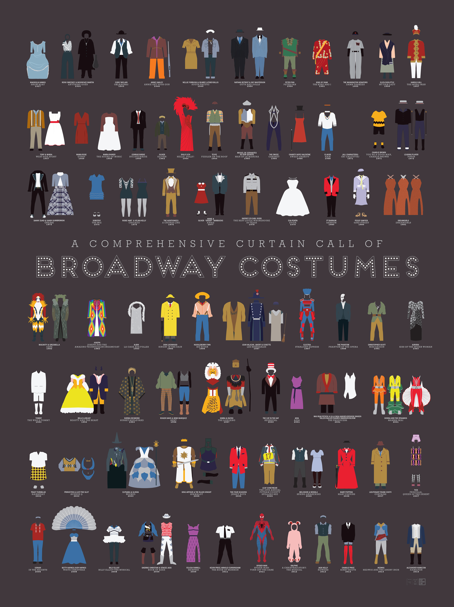

ABOUT THE SITE
The Idea
I have always loved the worlds of fashion and theatre and wanted to create a website that blended the artistry and beauty of both worlds. I have been performing, studying, watching, and listening to theatre since I was three years old — my whole life I have loved the stage as an escape from reality and a place to let imagination and creative expression run wild.
Growing up in the art world made me love to learn and appreciate all medias and forms of art, and just how important and innovative the artistry of these forms can be and how beautifully they can intersect. I believe that by studying theatre through the lens of fashion, we gain deeper insight into both disciplines and the cultures that produced them.
Why Costume Design?
Fashion in the world of theatre is one of the most under-appreciated and overlooked elements of the art form. Each tab and section is researched and contextualised within broader artistic and cultural movements, and created with the intent to make an interactive and visually entertaining learning experience.
My website aims to highlight the beauty and meticulousness of the craft, and overall emphasize the wonder of and need for storytelling in our culture.
What This Site Shows
- Theatre – I still pursue, perform, and consume musical and non-musical theatre to this day. It is my favourite creative outlet outside of school and work.
- Education – I am currently pursuing an undergraduate degree in Graphic Design with a minor in Social Sciences.
- Career – I hope to pursue a career in art education or art marketing in the future.

Costume development and design process